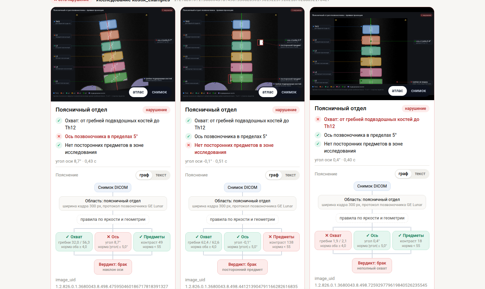
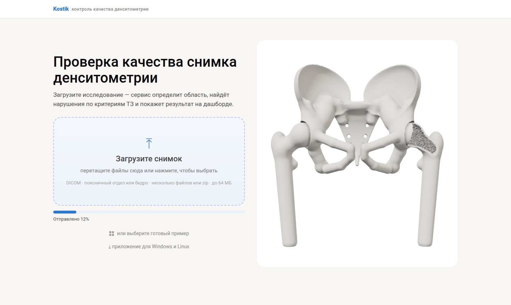
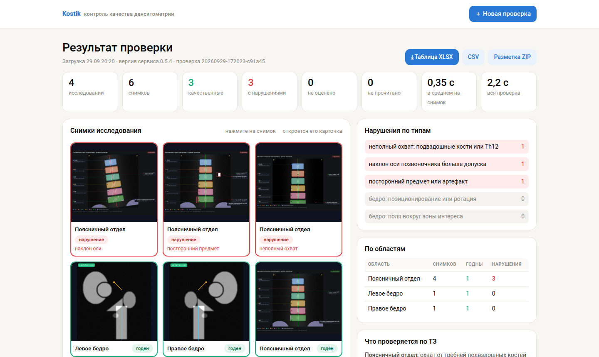
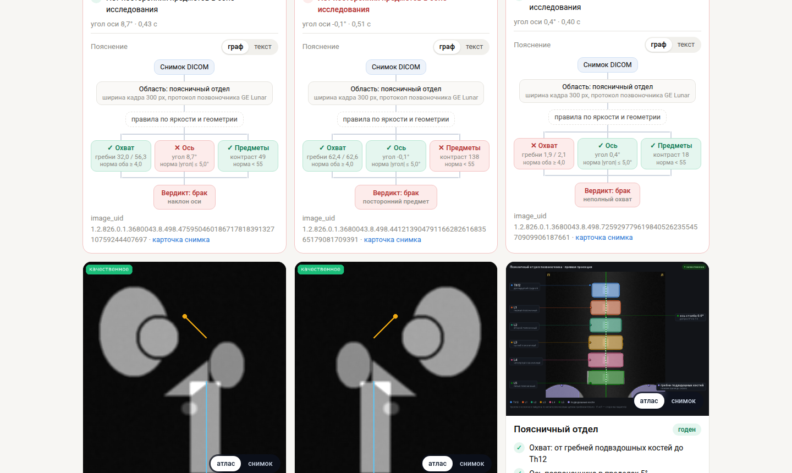

Kostik принимает DICOM поясницы и бедра и по каждому снимку говорит: годен или брак, какое нарушение по ТЗ и почему — прямо на снимке, в стиле анатомического атласа. Работает локально: снимки не покидают больницу.


Файлы DICOM, папка или zip — перетащить в окно. Область определяется сама.

Сколько годных, где брак и какой — охват, наклон оси, предметы, укладка бедра.

Атлас с разметкой, граф «измерение → норма → вердикт» и текст. Таблица по ТЗ — в CSV и XLSX.
git clone https://github.com/j0k/ltz2026 && cd ltz2026 ./build.sh # образ Docker, интернет нужен только здесь ./run.sh <папка или архив.zip> <выход> # results.csv, results.xlsx, overlays.zip ./serve.sh # веб-интерфейс и API на http://localhost:8000
Честно о пределах: позвоночник проверяется уверенно, для бедра вердикт — подсказка для проверки (ROC-AUC 0,66). Все метрики с доверительными интервалами — в README. Сервис — для контроля качества снимков, не для постановки диагноза. На этой странице — синтетические фантомы, не снимки пациентов.